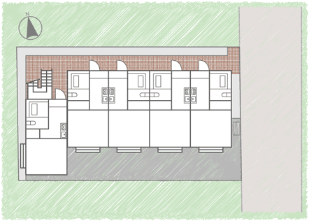
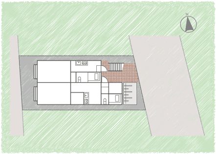

アパート建築・サブリース管理でオーナー様の資産運用をご提案するアミックス

こちらのプランは成約となりました。なお、掲載されていないプランも多数ございます。ご希望にあわせてご紹介いたしますので、お気軽にアミックスまでお問い合わせください。
 アミックス本社営業部：0120-441-432
アミックス本社営業部：0120-441-432
メールでのお問い合わせはこちらから
 埼玉県南部 A計画引渡し:2016.08
埼玉県南部 A計画引渡し:2016.08
東京に隣接した埼玉県南部の開発地域。東側幅9mの道路に面した立地にカラーアズHタイプ1棟14戸を建築しました。
- 総事業費
- 11,040万円
- 家賃収入
- 864万円／年

埼玉県南部 D計画引渡し:2016.03
東京に隣接した埼玉県南部の開発地域。約75坪の敷地にクラシックタイプ1棟10戸を建築しました。
- 総事業費
- 8,508万円
- 家賃収入
- 540万円／年
埼玉県南部 E計画引渡し:2015.12
東京に隣接した埼玉県南部の開発地域。西側幅6mの道路に面した立地にカラーアズHタイプ1棟16戸を建築しました。
- 総事業費
- 12,152万円
- 家賃収入
- 864万円／年
埼玉県南部 F計画引渡し:2015.08
東京に隣接した埼玉県南部の開発地域。駅から徒歩8分の好立地。カラーアズHタイプ1棟14戸を建築しました。
- 総事業費
- 12,190万円
- 家賃収入
- 801万円／年


東京都23区 K計画引渡し:2014.08
東京23区内、駅から6分の好立地。木造3階建ての賃貸併用住宅1棟5戸（賃貸4戸＋オーナールーム1戸）を建築しました。
- 総事業費
- 9,150万円
- 家賃収入
- 344万円／年
埼玉県南部 L計画 引渡し:2014.06
東京に隣接した埼玉県南部の開発地域。敷地は約50坪、コンパクトに全8戸（カラーアズHタイプ）を建築しています。
- 総事業費
- 6,578万円
- 家賃収入
- 480万円／年
埼玉県南部 M計画引渡し:2013.09
東京に隣接した埼玉県南部の開発地域。西側幅6mの道路に面した立地にカラーアズHタイプ1棟12戸を建築しました。
- 総事業費
- 9,066万円
- 家賃収入
- 761万円／年
埼玉県南部 N計画引渡し:2013.06
東京に隣接した埼玉県南部の開発地域。西側幅6mの道路に面した立地にカラーアズHタイプを2棟建築しました。
- 総事業費
- 15,164万円
- 家賃収入
- 1,258万円／年
埼玉県南部 O計画引渡し:2013.04
東京に隣接した埼玉県南部の開発地域。西側幅6mの道路に面した立地にカラーアズHタイプ1棟12戸を建築しました。
- 総事業費
- 9,100万円
- 家賃収入
- 739万円／年
東京都23区内 P計画引渡し:2013.03
東京都23区内、駅から徒歩5分の好立地。約78坪の敷地にカラーアズHタイプ1棟10戸を建築しました。
- 総事業費
- 9,526万円
- 家賃収入
- 683万円／年
埼玉県南部 Q計画引渡し:2013.03
東京に隣接した埼玉県南部の開発地域。敷地約61坪にカラーアズHタイプ1棟10戸を建築しました。
- 総事業費
- 7,757万円
- 家賃収入
- 653万円／年
埼玉県南部 S計画引渡し:2013.02
東京に隣接した埼玉県南部の開発地域。敷地約73坪にカラーアズHタイプ1棟12戸を建築しました。
- 総事業費
- 9,020万円
- 家賃収入
- 782万円／年
埼玉県南部 T計画引渡し:2013.01
東京に隣接した埼玉県南部の開発地域。敷地約70坪にカラーアズHタイプ1棟10戸を建築しました。
- 総事業費
- 8,096万円
- 家賃収入
- 653万円／年